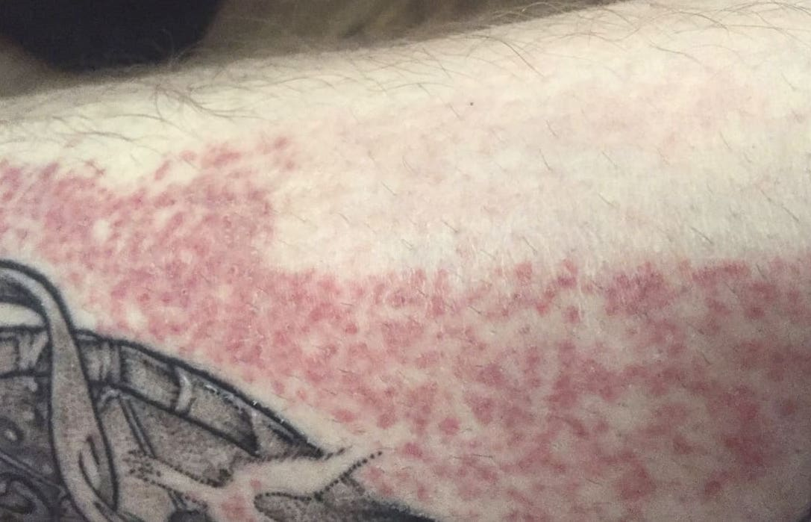
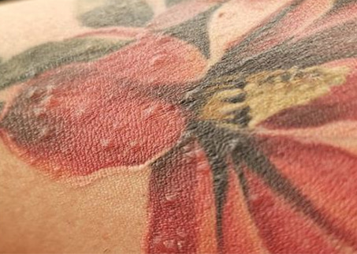

Мабуть, найпопулярніше питання, яке йде пліч-о-пліч з тату фарбою: «чи не буде в мене алергії?». Суть у тому, що ця справа суто індивідуальна, та як майстер маєш дізнатися, про всі хвороби та алергії у клієнта, у разі якщо клієнт має схильність до алергій або ж не впевнений, найкраще провести “Тест”.
Робиться це так: нанеси невелику кількість фарби для тату (не вбивайте тату, а просто нанесіть) на невелику, бажано чутливу ділянку (наприклад, на внутрішній бік плеча). Заклейте його та залиште не менше ніж на 12 годин. Потім змийте теплою водою. Якщо у клієнта з'явилося почервоніння на даній ділянці шкіри, це є ознака алергії, а отже дана фарба йому не підходить (для впевненості краще зробити відразу кілька тестів, якщо ти користуєшся різними виробниками)
Одні з найпоширеніших алергій на татуювання – фотоалергічний та алергічний контактний дерматит.
Ці типи реакцій викликані сульфідом ртуті у складі червоних чорнил для тату.

Ліхеноїдна алергічна реакція
Як правило, також пов'язана з червоними чорнилами для татуювання. Характеризується незначними випуклостями, що з'являються навколо ділянок малюнку з цим кольором чорнил.
Псевдолімфатозна алергічна реакція
Теж викликана чутливістю до інгредієнтів чорнил. Це уповільнена реакція, яка виникає протягом значної години після проведення процедури. Провокують її червоні, сині та зелені чорнила.
Ознаки реакції: набрякання шкіри, запалення, біль та свербіж.
Гранульомі
Це невеликі шишки, які можуть з'являтися внаслідок алергічної реакції. Як правило, викликають їх червоні чорнила, а ще пурпурні, зелені чи сині.

Екзематозні реакції гіперчутливості
Найшкідливішими вважаються червоні пігменти для татуювання. Таку їх особливість визначає сульфід ртуті.
Також у клієнта може з'явитися алергія на плівку для загоєння, а саме на клеючу речовину на ній, яка може викликати алергічний дерматит. Тому краще завжди користуватися гіпоалергенною плівкою.